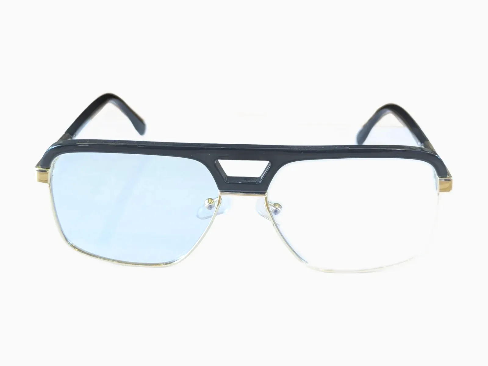
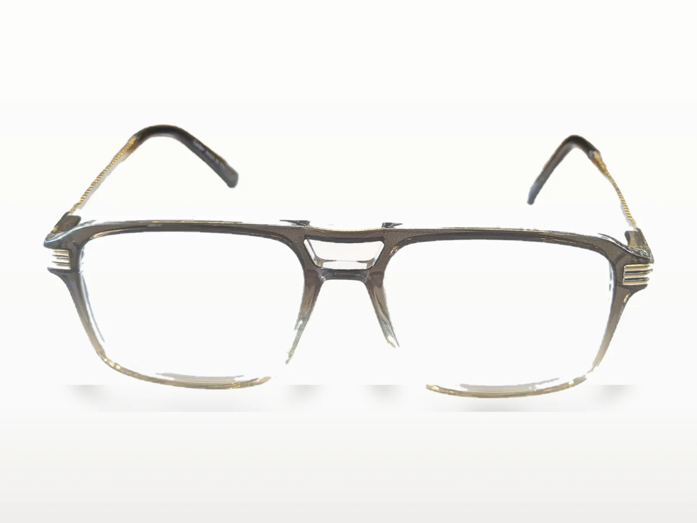
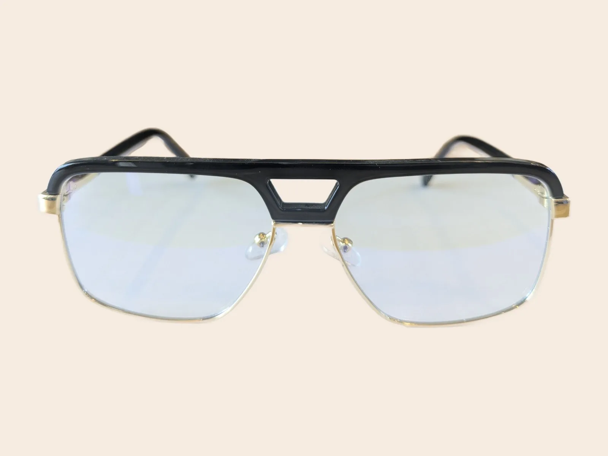
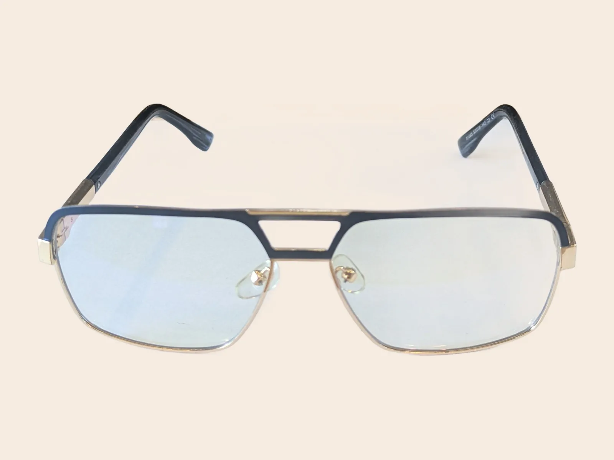
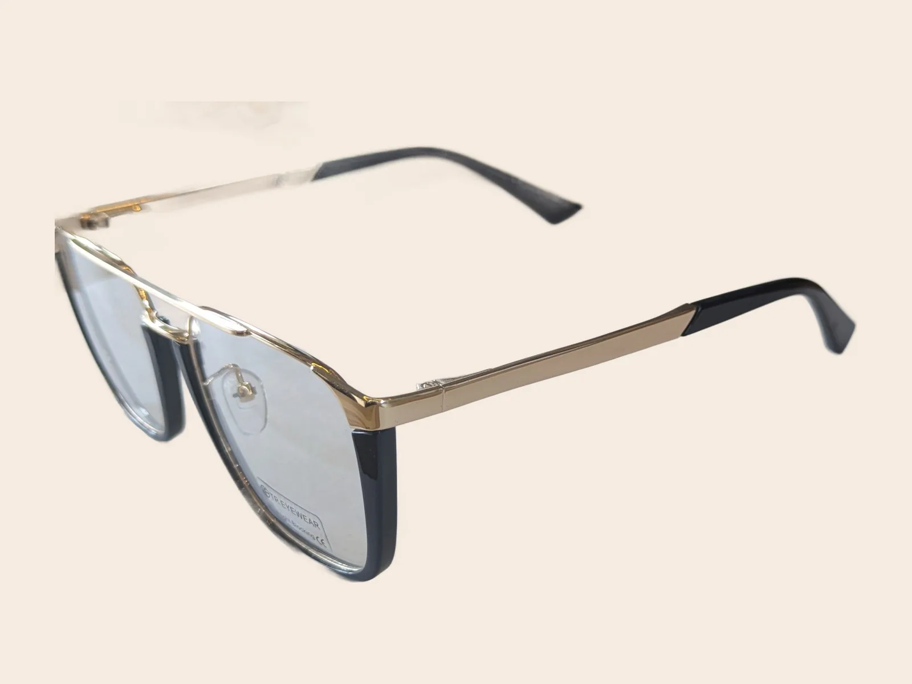

H02 · Double pont rectangulaire noirH02 · Double bridge, rectangular, black
Homme — double pont, noir et doré. À essayer au cabinet.Men's — double bridge, black and gold. Try them on at the practice.


Vous aimerez aussiYou may also like
-

-

-
